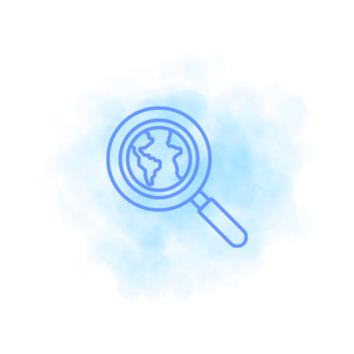
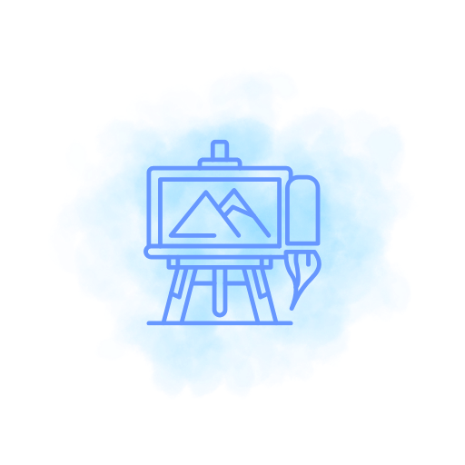
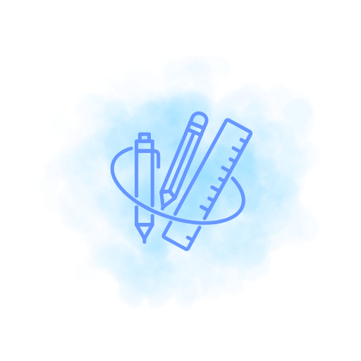
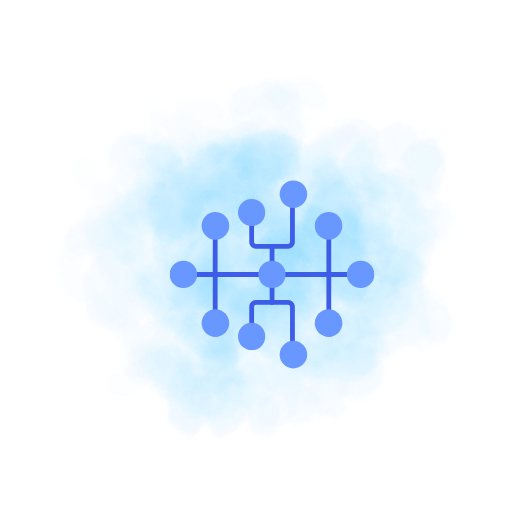
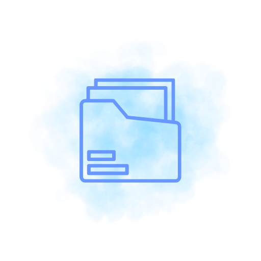
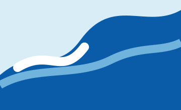
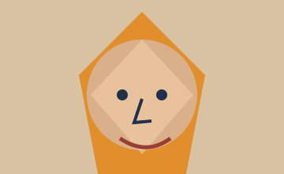
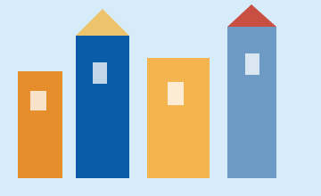
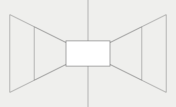
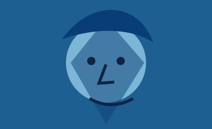

Imparare l’arte,
creare bellezza.
Risorse, progetti e strumenti per esplorare l’arte in modo creativo, consapevole e personale.
Scopri il sito →
Esplora
Artisti, correnti e opere per ispirare la creatività.
Esplora →
Laboratori
Progetti e attività didattiche per la classe.
Scopri i laboratori →
Strumenti
Tool digitali, app e risorse per creare e insegnare.
Vai agli strumenti →
Mappe
Sintesi, mappe e risorse per imparare meglio.
Scopri le mappe →
Archivio
I lavori degli studenti negli anni.
Vai all’archivio →Area studenti
Materiali, consegne, tutorial e documenti utili.
Accedi all’area →Ultimi lavori degli studenti
Vedi tutti i lavori →



